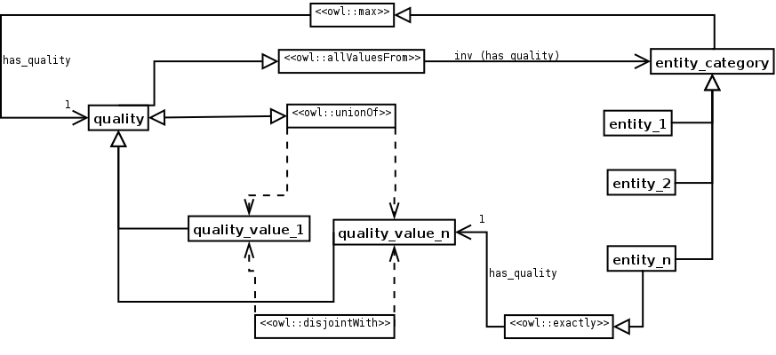
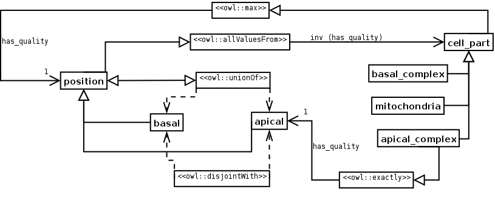

NAME: Entity-Quality.
CLASSIFICATION: Good Practice.
MOTIVATION: Qualities modify independent entities (e.g. position, colour, etc.) and thus they are dependent entities.
AIM: To model qualities without relying in a proliferation of object properties, as in the Entity-Property-Quality ODP.
STRUCTURE:
SAMPLE:
ELEMENTS: The core of this ODP is formed by the qualities, placed in a single hierarchy (the qualities are disjoint and the superclass is covered by them, like in the Value Partition ODP). Entities are linked to qualities by an object property, and a Qualifed Cardinality Restriction is used to express whether the quality is intrisic (exactly 1) or accidental (max 1). Also, qualities are limited to the entities to which they apply by an universal restriction (e.g. mitochondria do not regulate mitosis).
IMPLEMENTATION: The first step is to create the qualities hierarchy, in the same way as the Value Partition ODP. Create the object property to link entities to qualities. Add the restriction [QualityCategory inv (HasQuality) only Entity] (this restricts the qualities to the entity). Add the restriction [EntityCategory HasQuality max 1 QualityCategory] or [EntityCategory HasQuality exactly 1 QualityCategory] (this restricts the entities to the qualities, max 1 in the case of accidental qualities and exactly 1 in the case of intrinsic qualities).
RESULT: The entities and the qualities of those entities are properly separated, and which qualities apply to which entities is also expressed.
SIDE EFFECTS: it is very difficult to add sub-qualities. Cannot handle multi-aspect qualities.
ADDITIONAL INFORMATION: See also Entity-Feature-Value and Entity-Property-Value.
REFERENCES:
URL: http://odps.sourceforge.net/odp/owl/Good_Practice_ODP/Entity_Quality.owl